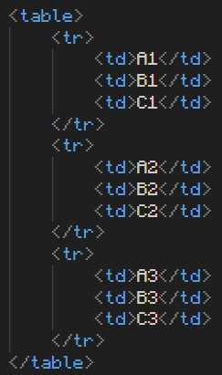
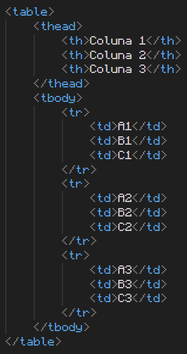
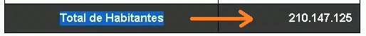
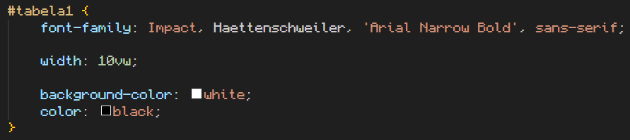

Tabelas em HTML5
Tags
Para criar tabelas em HTML usa-se a tag table.
Dentro dela você irá inserir linhas (table row) com a tag tr.
Nessas linhas, você irá inserir dados (table data) com a tag td. O fechamento dessas tags é opcional, mas o vscode já fecha automatciamente as tags.
Ex:
Resultando nesta tabela, sem estilo algum:
| A1 | B1 | C1 |
| A2 | B2 | C2 |
| A3 | B3 | C3 |
Head, body e foot
Podemos adicionar titúlo, cabeçalho e rodapé também, com as seguintes tags:
- caption é o título da tabela, onde você inserirá apenas texto, sem outras tags dentro.
- thead (onde vai o cabeçalho, usando a tag th para preencher, que colocará em letras maiúsculas por padrão)
- tbody (onde vão as informações, usando a tag td para preencher, com letras minúsculas por padrão)
- tfoot (onde vai o rodapé, usando também a tag th para preencher)
Ex:
Resultando em:
| Coluna 1 | Coluna 2 | Coluna 3 |
|---|---|---|
| A1 | B1 | C1 |
| A2 | B2 | C2 |
| A3 | B3 | C3 |
Scope
Você deve informar ao HTML da página qual o tipo de título ao usar a tag th, por exemplo, existem títulos que descrevem dados que vem abaixo dele, mas existem títulos que descrevem dados que vem na mesma linha.
Neste exemplo, os dados virão abaixo do título, então se usa a tag scope: col;

Já neste outro exemplo, usa-se scope: row; Pois os dados referentes ao título estão na mesma linha.
Estilo
Podemos adicionar estilo nas tabelas.
Ex:
Resultando em:
| A1 | B1 | C1 |
| A2 | B2 | C2 |
| A3 | B3 | C3 |
Alinhamento vertical e horizontal
- text-align: left, center, right
- vertical-align: top, middle, bottom